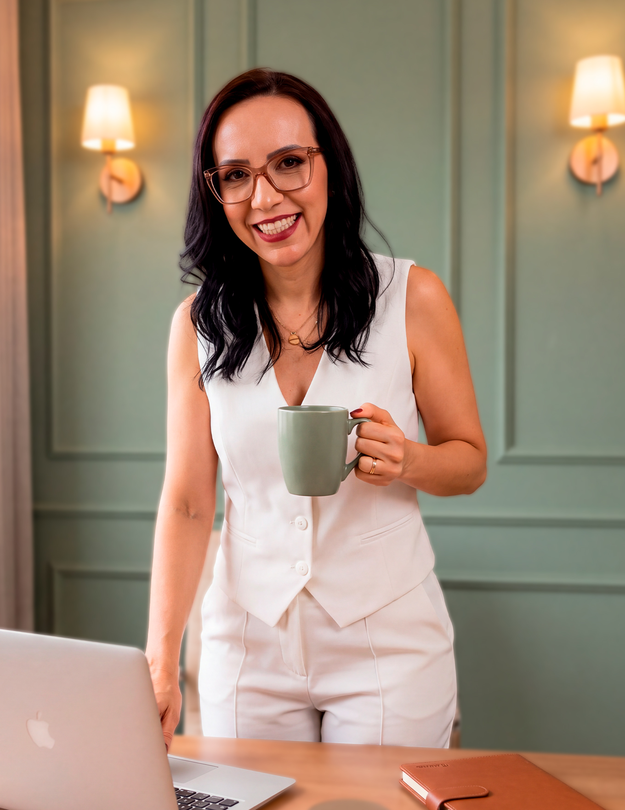
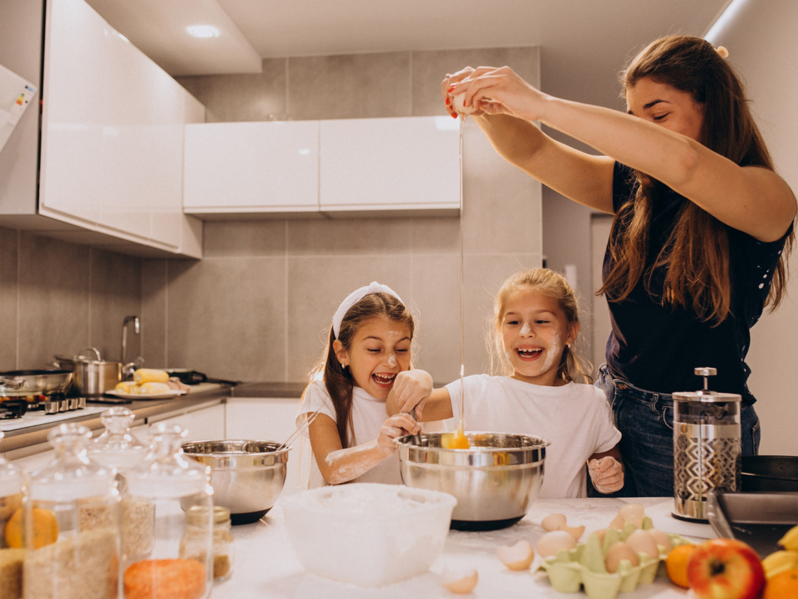
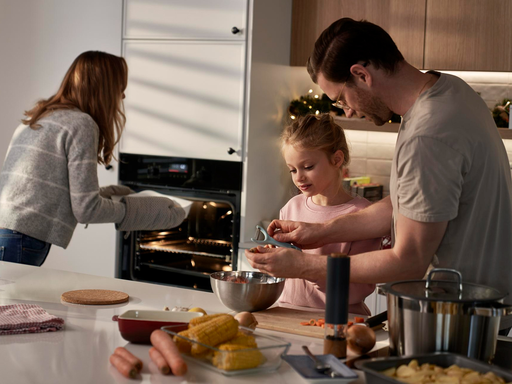

Cuide da saúde de quem você ama, começando pela alimentação da sua casa.
Um planejamento alimentar com cardápio, lista de compras e orientações de preparo na prática, construído a partir das necessidades, hábitos e rotina da sua família.

Você quer sentir segurança nas escolhas que faz pela sua família.
Quer saber que está oferecendo uma alimentação adequada, dando atenção às necessidades de cada pessoa e ajudando a formar bons hábitos.
Mas, com tantas recomendações diferentes, nem sempre é fácil saber o que realmente faz sentido para vocês.
Ter uma nutricionista olhando para a alimentação da família ajuda a entender o que merece atenção e a fazer essas escolhas com mais confiança.
Cada pessoa vive uma fase. Todas merecem atenção.
As crianças estão descobrindo sabores e formando hábitos. Os adultos têm seus próprios objetivos de saúde. Alguém da família pode precisar de um cuidado alimentar específico.
Essas necessidades podem ser consideradas em conjunto, aproximando a família de uma alimentação melhor para todos.
No Personal Diet Família, eu ajudo vocês a encontrar esse caminho, respeitando as diferenças de quem compartilha a mesma casa.
Comer melhor também pode ser algo que a família tenha prazer em fazer.


As receitas de que vocês gostam, o almoço de domingo e os momentos compartilhados à mesa têm valor. Eles fazem parte da relação que a família constrói com a comida.
Por isso, as preferências de vocês entram nessa conversa.
Quero ajudar sua família a descobrir possibilidades, ampliar escolhas e encontrar prazer em uma alimentação que também cuide da saúde.

Você pode ter apoio para cuidar de quem ama.
Talvez você já queira melhorar a alimentação da família há algum tempo e precise de orientação para começar.
Vamos conversar sobre o que preocupa você, o que gostaria de mudar e o que deseja para a saúde de quem vive na sua casa.
Esse é o primeiro passo para conhecer o Personal Diet Família.